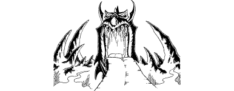

23
For countless hours you follow this tunnel as it ascends and descends by ramps and stairways through a bewildering maze of chambers, vaults, and grand halls. On your travels through this vast underworld you witness many awe-inspiring sights: huge subterranean quarries, blazing furnaces, armouries, weapon forges, steel mills, and white-hot lava pits. Armies of grey-skinned humanoid workers labour without rest within this hellish domain to manufacture weapons of war and destruction.
At one vast hall you stop to observe a legion of these creatures tapping the volcanic power which lies at the core of this realm. By a system of chutes and tubes they divert a blazing lava flow to turn gigantic wheels and heat titanic vats of noxious fluids. The workers, although physically similar in size and demeanour to Drakkarim, seem to lack consciousness and remain oblivious to your presence. It is as if they have been turned into unthinking automatons, programmed simply to perform their labour with little regard to their immediate surroundings.
You leave the hall and ascend a staircase which spirals hundreds of feet through solid rock to a titanic concourse. Here your senses detect a living presence and you allow your Kai instincts to lead you in pursuit of it. You enter a tunnel which branches away from the concourse and follow this to a wider passage. The walls of this passage are decorated with spectacular scenes of war and destruction. Thousands of troops fight an endless parade of battles across the landscapes of a hundred different worlds. In each of the scenes the theme and the outcome is identical: the victory of the superior forces of Evil over the inferior armies of Good. This callous celebration of evil military might infuriates you, but you control your anger and use it to sharpen your senses. You detect that somewhere at the end of this passage is where the living presence can be found and, not knowing the nature of what it is that you will find there, you approach with the utmost caution.
The passage ends at a vast chasm where a narrow bridge of rock crosses a yawning void to a gate located on the far side, some 300 yards distant. The gate and its surroundings have been fashioned to resemble the mouth and head of a ferocious dragon, and the bridge of rock is likewise carved to resemble its extended tongue. A shimmering, twinkling, blue-white light gleams from the mouth of the dragon-gate, revealing it to be the exit from this dark domain. Excited by your discovery, you step onto the narrow rock-bridge and make your way across to the far side as swiftly as you dare. On either side of this stone beam the chasm falls away into a seemingly bottomless pit. You try not to look down for the sight makes your stomach churn uncontrollably.
{kind=link}

You are nearing the centre of the bridge when suddenly a dark and terrifying apparition manifests itself before the dragon-gate. This awesome sight brings you skidding to a halt.